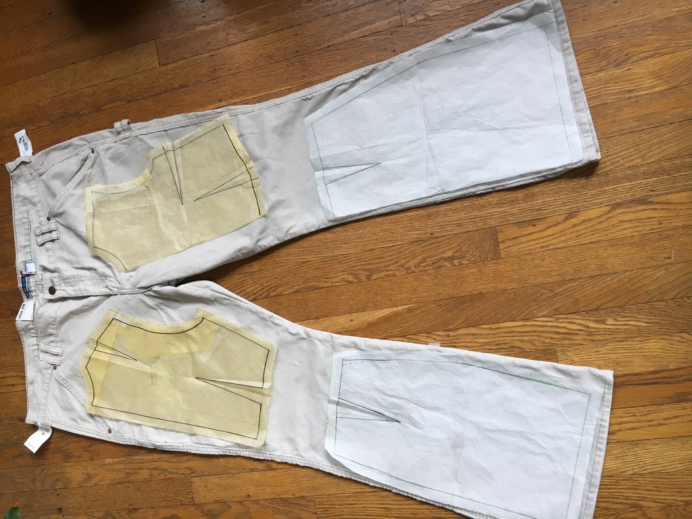

Upcycling
Personal Project
In Brief
Upcycling is a project grew out of my personal zero waste initiative. I really enjoy clothing, but there's been a growing sense of guilt for me when I purchase brand new clothing. The fashion industry produces an alarming amount of waste.Synthetic fabrics release microplastics into our water system, clothing dyes pollute our water supply, denim production wastes trillions of gallons of water a year, and lots of fabric gets wasted when we make any kind of garment.So I made clothes from clothes. I got what I wanted - new clothes, in the style I wanted, made to fit me - from secondhand materials.
Process
This two-piece set began its life as a pair of corduroy pants. I patterned the top from a bodice sloper, freehanding the waistband and lapels from extra fabric after a preliminary fitting. The skirt I constructed by draping and pinning. I chose to reuse the hemline, and one of the pant side seams as the skirt's front seam. The zippers and thread are the only parts of this garment that were bought new.
